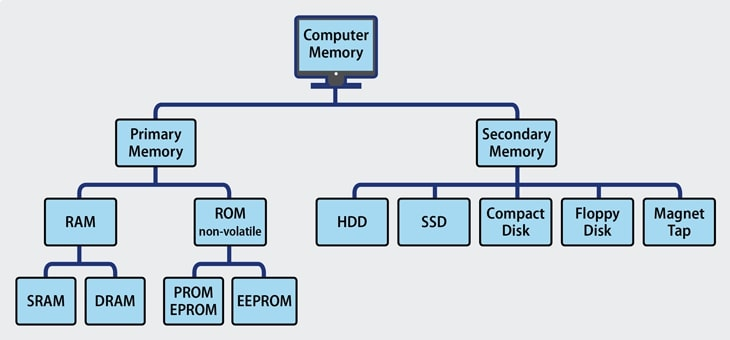

Computer Memory
Update:25/07/2019 By Oscuro Smith.
Types of Computer Memory: Primary and Secondary
Although many types of memory in a computer exist, the most basic distinction is between primary memory, often called system memory, and secondary memory, which is more commonly called storage.
The key difference between primary and secondary memory is speed of access.
- Primary memory includes ROM and RAM, and is located close to the CPU on the computer motherboard, enabling the CPU to read data from primary memory very quickly indeed. It is used to store data that the CPU needs imminently so that it does not have to wait for it to be delivered.
- Secondary memory by contrast, is usually physically located within a separate storage device, such as a hard disk drive or solid state drive (SSD), which is connected to the computer system either directly or over a network. The cost per gigabyte of secondary memory is much lower, but the read and write speeds are significantly slower.

Over several periods of computer evolution, a wide of array of computer memory types has been deployed, each with its own strengths and weaknesses.
Primary Memory Types: RAM and ROM
There are two key types of primary memory:
- RAM, or random access memory
- ROM, or read-only memory
Let's look in-depth at both types of memory.
1) RAM Computer Memory
The acronym RAM stems from the fact that data stored in random access memory can be accessed – as the name suggests – in any random order. Or, put another way, any random bit of data can be accessed just as quickly as any other bit.
The most important things to understand about RAM are that RAM memory is very fast, it can be written to as well as read, it is volatile (so all data stored in RAM memory is lost when it loses power) and, finally, it is very expensive compared to all types of secondary memory in terms of cost per gigabyte. It is because of the relative high cost of RAM compared to secondary memory types that most computer systems use both primary and secondary memory.
Data that is required for imminent processing is moved to RAM where it can be accessed and modified very quickly, so that the CPU is not kept waiting. When the data is no longer required it is shunted out to slower but cheaper secondary memory, and the RAM space that has been freed up is filled with the next chunk of data that is about to be used.
Types of RAM
- DRAM: DRAM stands for Dynamic RAM, and it is the most common type of RAM used in computers. The oldest type is known as single data rate (SDR) DRAM, but newer computers use faster dual data rate (DDR) DRAM. DDR comes in several versions including DDR2 , DDR3, and DDR4, which offer better performance and are more energy efficient than DDR. However different versions are incompatible, so it is not possible to mix DDR2 with DDR3 DRAM in a computer system. DRAM consists of a transistor and a capacitor in each cell.
- SRAM: SRAM stands for Static RAM, and it is a particular type of RAM which is faster than DRAM, but more expensive and bulker, having six transistors in each cell. For those reasons SRAM is generally only used as a data cache within a CPU itself or as RAM in very high-end server systems. A small SRAM cache of the most imminently-needed data can result in significant speed improvements in a system
The key differences between DRAM and SRAM is that SRAM is faster than DRAM - perhaps two to three times faster - but more expensive and bulkier. SRAM is usually available in megabytes, while DRAM is purchased in gigabytes.
DRAM uses more energy than SRAM because it constantly needs to be refreshed to maintain data integrity, while SRAM - though volatile – does not need constant refreshing when it is powered up.
2) ROM Computer Memory
ROM stands for read-only memory, and the name stems from the fact that while data can be read from this type of computer memory, data cannot normally be written to it. It is a very fast type of computer memory which is usually installed close to the CPU on the motherboard.
ROM is a type of non-volatile memory, which means that the data stored in ROM persists in the memory even when it receives no power – for example when the computer is turned off. In that sense it is similar to secondary memory, which is used for long term storage.
When a computer is turned on, the CPU can begin reading information stored in ROM without the need for drivers or other complex software to help it communicate. The ROM usually contains "bootstrap code" which is the basic set of instructions a computer needs to carry out to become aware of the operating system stored in secondary memory, and to load parts of the operating system into primary memory so that it can start up and become ready to use.
ROM is also used in simpler electronic devices to store firmware which runs as soon as the device is switched on.
Types of ROM
ROM is available in several different types, including PROM, EPROM, and EEPROM.
- PROM PROM stands for Programmable Read-Only Memory, and it is different from true ROM in that while a ROM is programmed (i.e. has data written to it) during the manufacturing process, a PROM is manufactured in an empty state and then programmed later using a PROM programmer or burner.
- EPROM EPROM stands for Erasable Programmable Read-Only Memory, and as the name suggests, data stored in an EPROM can be erased and the EPROM reprogrammed. Erasing an EPROM involves removing it from the computer and exposing it to ultraviolet light before re-burning it.
- EEPROM EEPROM stands for Electrically Erasable Programmable Read-Only Memory, and the distinction between EPROM and EEPROM is that the latter can be erased and written to by the computer system it is installed in. In that sense EEPROM is not strictly read-only. However in many cases the write process is slow, so it is normally only done to update program code such as firmware or BIOS code on an occasional basis
Confusingly, NAND flash memory (such as that found in USB memory sticks and solid state disk drives) is a type of EEPROM, but NAND flash is considered to be secondary memory.
Secondary Memory Types
Secondary memory comprises many different storage media which can be directly attached to a computer system. These include:
- hard disk drives
- solid state drives (SSDs)
- Optical (CD or DVD) drives
- Tape drives
Secondary memory also includes:
- Storage arrays including 3D NAND flash arrays connected over a storage area network (SAN)
- Storage devices which may be connected over a conventional network (known as network attached storage, or NAS)
Arguably cloud storage can also be called secondary memory.
Differences between RAM and ROM
ROM:
- Non-volatile
- Fast to read
- Usually used in small quantities
- Cannot be written to quickly
- Used to store boot instructions or firmware
- Relatively expensive per megabyte stored compared to RAM
RAM:
- Volatile
- Fast to read and write
- Used as system memory to store data (including program code) that the CPU needs to process imminently
- Relatively cheap per megabyte stored compared to ROM, but relatively expensive compared to secondary memory
What Technology is Between Primary and Secondary Memory?
In the last year or so a new memory medium called 3D XPoint has been developed with characteristics that lie between primary and secondary memory.
3D XPoint is more expensive but faster than secondary memory, and lower cost but slower than RAM. It is also a non-volatile memory type.
These characteristics mean that it can be used as an alternative to RAM in systems which require vast amounts of system memory that would be too expensive to build using RAM (such as systems hosting in-memory databases). The trade-off is that such systems do not enjoy the full performance gains of using RAM.
Since 3D XPoint is non-volatile, systems that use 3D XPoint for system memory can be up and running again after a power failure or other interruption very quickly, without the need for all the data to be read back into system memory from secondary memory.